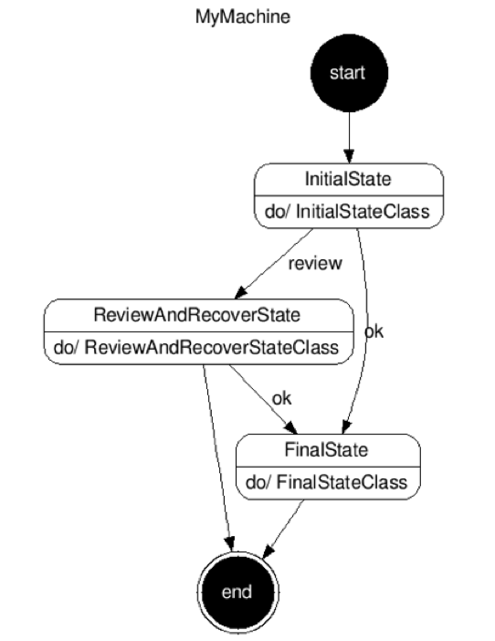
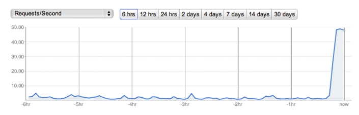

Background
Any application developer who has built an application of any size has had to deal with workflows. A workflow is a sequence of steps required to achieve an overall process. The workflow can contain conditional logic and thus have branches or loops. Workflows can be large and may span many seconds, minutes, hours or even days. Because of this fact, workflows must also be resilient and lightweight.
Google App Engine is an excellent platform and provides APIs that are the building blocks for a wide array of applications. One API in particular, Task Queue API, provides mechanisms to queue work which allows a workflow to be separated into discrete steps. Additionally, the Task Queue API provides built-in retry mechanisms; if a particular task fails, the job is re-queued and will be tried later. The Task Queue API provides the essential tools necessary to build resilient and scalable workflows.
Large-scale systems can often have correspondingly large-scale workflows. While Task Queue has the necessary building blocks, it does not directly provide facility to build these workflows in a normal, predictable manner. On the contrary, the flexibility of Task Queue, while powerful, often leads to a spiderweb of process flows and subtle differences in implementations.
These types of systems, as you can imagine, are notoriously difficult to trace and debug. Changing these systems is equally difficult as race conditions and other hidden dependencies may emerge.
Introducing Fantasm
We at VendAsta Technologies have developed Fantasm as an open-source tool to help with this dilemma. Fantasm is a Python library that allows developers to build workflows that harness the capabilities of the Task Queue API and the App Engine infrastructure without needing to be concerned with the actual Task Queue code.
Fantasm uses the finite state machine model of computing. A developer designs a workflow as a set of states with transitions between them. Each workflow becomes a machine with a single initial state and at least one final state. States are connected by transitions which allow machines to branch and loop. Each state is responsible to emit an event which identifies which transition to follow next.
States have actions which contain developer code. As a developer, you are free to execute any legal Python code within the action (subject to App Engine quotas and restrictions) as long as you return the event to tell Fantasm where to go next.
Each finite state machine instance has an execution context; each state (and thus your action code) has the ability to read and modify this context. The context is made available to all subsequent states in the machine instance. The context is essentially a dictionary in which you can place arbitrary values, like partially computed results or keys to Datastore entries.
Comparing and contrasting the Pipeline API
The recently released App Engine Pipeline API is aimed at solving very similar issues as Fantasm: namely, leveraging the TaskQueue API to harness the power of the distributed, massively-scalable App Engine infrastructure to implement regular, testable and operationally accessible workflows. The Pipeline API uses code to define its workflows, while Fantasm specifies its workflows with a declarative YAML file format. Both have advantages, which are summarized briefly as follows.
The advantage of Fantasm is the simplicity and strictness of the workflow definition. Declarative finite state machines are deterministic and can be verified as correct. They can be very simple to describe. The framework offers a great entry point into building scalable workflows.
The Pipeline API's advantage is flexibility. The workflows it describes can be deep, recursive, and non-deterministic. The framework focuses on how parallel work fans-out and fans-in, which is especially useful for advanced users but can be confusing for newbies.
Thus, Fantasm is an excellent launch pad for building an understanding of how to decompose a workflow into the appropriate chunk size as well as gaining a solid footing in how to build idempotent states.
Designing a workflow
In designing a Fantasm workflow, you are essentially designing a finite state machine. The states and transitions of a Fantasm machines are defined in YAML markup. The YAML is placed in a file called fsm.yaml beside your app.yaml file. You must take your overall workflow and decompose it into discrete chunks; naming your states and choose appropriate "chunk sizes" will allow for operational clarity and easy machine rewiring.
# fsm.yaml
state_machines:
- name: MyMachine
states:
- name: InitialState
action: InitialStateClass
initial: True
transitions:
- to: ReviewAndRecoverState
event: review
- to: FinalState
event: ok
- name: ReviewAndRecoverState
action: ReviewAndRecoverStateClass
final: True
transitions:
- to: FinalState
event: ok
- name: FinalState
action: FinalStateClass
final: True

The above machine is a 3-state machine with one initial state (InitialState) and two final states (ReviewAndRecoverState and FinalState). InitialState can transition to either ReviewAndRecoverState or FinalState, and ReviewAndRecoverState may optionally transition to FinalState or simply stop.
The decisions on how to transition are defined by the events emitted. The events are emitted by developer code housed in the classes InitialStateClass, ReviewAndRecoverStateClass and FinalStateClass. Fantasm takes care of invoking these classes and their methods at the appropriate time. The above diagram can be automatically generated by the Fantasm framework using the URL /fantasm/graphviz/[your machine name]/, e.g., /fantasm/graphviz/MyMachine/.
Understanding Task Queue concepts
Though Fantasm strives to hide Task Queue coding from the developer, it is important to understand some of the key concepts in order to make smart choices in your machine design. Under the hood, Fantasm effectively uses a Task Queue task for each transition between states. This means that if the code in a state action fails (i.e., raises an exception), that transition will be requeued and retried according to the normal Task Queue retry policy. This policy includes an almost immediate retry followed by an exponential backoff; every task in a retry state will be attempted at least once per day.
This has some direct implications on machine design. First, and most importantly, you should build a state action that is idempotent. Knowing that a state will be retried on a failure, you must write state action code that is safe to be rerun possibly many times. In particular, you need to think about the side-effects of your code — writing a record to datastore, sending an email, POSTing something to an external server — and take appropriate precautions.
This leads to the second implication on machine design: strive to keep your state action code small and with a single side-effect step that is performed essentially as the last part of your action code. If there is very little or no code after your side-effect action, there is little opportunity for exceptions to be raised which would cause your side-effect to be re-executed on the task retry.
There are other techniques to achieve idempotency, but this approach is usually the easiest. It is important to note that any changes to the machine context made in state action code that raises an exception are not present on the retry. So, for example, you can write a boolean flag into the context indicating that an email had been sent, but if an exception is raised later in the state action code, that flag will not be present on the retry. The context is only updated on a successful state execution.
As a final note, it is important to know that Task Queue task size is limited to 10kB. Machine context is serialized into the task on each transition. Therefore, your machine context is subject to this 10kB limitation. If you need to pass large contexts between states of a machine, you will likely have to write this context to Datastore and pass a key on the context instead.
Starting a machine
Once you have your machine built, you need to kick it off. Fantasm machines are started simply by requesting a URL. This URL has the form /fantasm/fsm/YOUR_MACHINE_NAME. You can add query args to this URL and these args will be present in your machine context. For example, you could invoke the above machine using /fantasm/fsm/MyMachine?arg1=value. Your state action code has access to this value via the machine context:
class InitialStateClass(object):
def execute(self, context, obj): # called by Fantasm
arg1 = context['arg1'] # query args become part of the machine context
if arg1 == 'something':
# execute method returns the event to dispatch, driving the transition
return 'ok'
else:
return 'review'
The Task Queue API allows tasks to use either POST or GET. Fantasm will preserve whatever mechanism was used to start the machine, meaning if you start the machine with a GET, all of the machine transitions will use GET. A GET request is helpful when functionally testing a machine because the machine context is present (as query args) in your log files, however, you are subject to URL length restrictions. Due to these restrictions, larger contexts are essentially forced to use POST invocations; you can also indicate the desired method by specifying &method=POST when invoking the machine.
Fanning out
At a talk given by Brett Slatkin at Google I/O 2010, we were formally introduced to a pair of concepts: fan-in and fan-out. App Engine developers who worked in large scale applications likely recognized the basic underpinnings of these concepts, in particular the most common form of fan-out, continuation. This is a technique where you take a large dataset, typically the results of a datastore query, read a chunk of it and pass the rest of it to another App Engine instance using Task Queue, and then operate over your chunk. On the second App Engine instance, the handler of the task performs the same operation. Using this technique, in particular passing the dataset forward before operating over it, allows many App Engine instances to work in parallel to process the dataset. This is an important and key part of the power of App Engine.
Fantasm provides mechanisms to make continuation very easy to implement. In your YAML, you can denote a state as being a continuation. If you do so, in addition to writing code for your state action, you also need to implement a continuation method. While the state action code is responsible for returning an event to dispatch, the continuation method is responsible for returning a token. This token is passed to the next invocation of the continuation method on the next App Engine instance.
After the continuation is run (and Fantasm fires up another App Engine instance to handle the next continuation via Task Queue), your state action code is executed. If you need to pass information from your continuation method to your action method, you can use the obj dictionary. The obj dictionary differs from the machine context in that it is scoped to a single task invocation. Items on the obj dictionary are never serialized and are not passed from state to state. A lot of these concepts will be clearer with an example.
Email subscription example
Imagine that we have a large list of subscribers to whom we would like to send an email. While this is naively a simple loop and a call to the Mail API, we need to consider the unhappy path. What happens if something unexpected happens half way through? Who received the message, and who did not? How do we recover?
It is these issues that Fantasm helps to overcome. Imagine we have a simple machine like the following:
state_machines:
- name: SendSubscriberEmail
states:
- name: SendEmail
action: SendEmail
continuation: True
initial: True
final: True
The SendEmail state is going to be responsible to send a single email. The continuation flag indicates that this state will implement a continuation method which will cause many App Engine instances to be spun up to process this event. In Fantasm, a continuation effectively causes multiple instances of the finite state machine to be created, one for each continuation token. A continuation state need not be a final state, but be aware that after a continuation, possibly many machines are in-flight; we'll see below how we can combine these machines back together.
To finish the above machine, we need to write a continuation method and an action method. Recall the continuation method is responsible to return a token that will be passed to the next continuation method on a subsequent App Engine instance. The action method will perform our intended side-effect of sending the email. Normally, it is responsible to emit an event to drive the machine instance forward, but in this case the state is denoted as a final state, so no event is emitted.
class SendEmail(object):
def continuation(self, context, obj, token=None):
"""Execute a query using an optional cursor, and
store a single result in obj['subscriber']"""
query = Subscriber.all()
if token:
query.with_cursor(token)
subscriber = query.fetch(1)
obj['subscriber'] = subscriber # obj dict passes info to execute() method
return query.cursor # return token for next continuation() method
def execute(self, context, obj):
"""Send an email to a single subscriber"""
subscriber = obj['subscriber']
if subscriber: # possible none were returned
# create email contents, perhaps with content from datastore, etc.
# . . .
mail.send_mail(to=subscriber.email, ...)
# note: this 'side-effect' performed as last step for idempotency
For a large list of subscribers, you will see a Task Queue for each, and very likely a large number of App Engine instances involved in processing these tasks. Correspondingly, you will see a large, though likely brief, spike on your App Engine dashboard (see tail-end of figure below). To start the machine, we make a request to the machine URL: /fantasm/fsm/SendSubscriberEmail/.

Congratulations! You've just unleashed the power of App Engine and fan-out scalability on your large-dataset workflow. Also, because of Fantasm and Task Queue retry mechanisms, if any of the individual emails fails to send, it will be retried until it succeeds.
Counting it up
Imagine that we want to count how many emails are sent in the above machine. A naive implementation would add some lines of code after our send_email() invocation to increment a counter in Datastore. Since we know that many machines are processing this dataset, we're going to require a transaction to increment the counter safely. So we might write something like this:
class EmailBatch(db.Model):
counter = db.IntegerProperty(default=0)
def execute(self, context, obj):
# ...
send_mail(to=subscriber.email, ...)
def tx():
batch = EmailBatch.get_by_key_name('1') # key is simplified for example
if not batch:
batch = EmailBatch(key_name='1')
batch.counter += 1
batch.put()
db.run_in_transaction(tx)
While this code works fine in the happy path, we need to consider what possible failures may occur. Transactional updates to the Datastore are expensive and slow (use 1 transaction per second as a rule of thumb), so there is a high likelihood of an exception being thrown in the code after the send_email(). When this occurs, our task is requeued, and on the retry, the execute() method is run again, sending another identical email to the same recipient! Not good.
Our first step is to address this is to introduce another state to our machine:
state_machines:
- name: SendSubscriberEmail
states:
- name: SendEmail
action: SendEmail
continuation: True
initial: True
transitions:
- to: CountEmail
- event: ok
- name: CountEmail
action: CountEmail
final: True
In this machine, we've added a second state CountEmail. After sending the email, we will emit the event ok and drive the machine to the second, and final, state CountEmail. Our code becomes:
class SendEmail(object):
def continuation(self, context, obj, token=None):
# no change to this method
def execute(self, context, obj):
subscriber = obj['subscriber']
mail.send_mail(to=subscriber.email, ...)
# only change is to emit event ok
return 'ok'
class CountEmail(object):
def execute(self, context, obj):
"""Transactionally update our batch counter"""
def tx():
batch = EmailBatch.get_by_key_name('1') # key simplified for example
if not batch:
batch = EmailBatch(key_name='1')
batch.counter += 1
batch.put()
db.run_in_transaction(tx)
We have now separated our two side-effects: sending an email and updating our batch counter. We have idempotent states that are safe to retry without any unintended actions occurring.
Fanning in
Continuing our example, a final improvement can be made. Recall that fanning out with our continuation method caused many instances of machines to be created, one for each email. Datastore transactions, as mentioned, are expensive; yet we are using one for each email to count up the number of emails sent. It would be more efficient to combine many of these machines together so that we can increment our counter by many multiples in a single transaction. Fantasm provides tools to achieve this.
In order to fan machines together, we demarcate a state as being a fan_in state. Machines instances in the same state with the same event being dispatched are fanned together so that they can be processed as a group. The fan_in number specified is the number of seconds to wait and collect machines in the same state.
Our machine YAML (fsm.yaml) becomes the following:
state_machines:
- name: SendSubscriberEmail
states:
- name: SendEmail
action: SendEmail
continuation: True
initial: True
transitions:
- to: CountEmail
- event: ok
- name: CountEmail
action: CountEmail
final: True
fan_in: 3
The only change is the presence of the fan_in attribute. It means that every 3 seconds, all machines in the state CountEmail will be processed as a group. The only difference to the state action code is that, instead of receiving a single machine context, you will receive a list of machine contexts, one for each machine being fanned in.
In this particular example, the number of machines fanning in represents the number of emails successfully sent — a bit of a subtle point. Because of this, we can use the length of the context list to increment our counter. Our state action method becomes the following:
class CountEmail(object):
def execute(self, list_of_contexts, obj):
"""Transactionally update our batch counter"""
def tx(count):
batch = EmailBatch.get_by_key_name('1') # key simplified for example
if not batch:
batch = EmailBatch(key_name='1')
batch.counter += count
batch.put()
emails_sent = len(list_of_contexts)
db.run_in_transaction(tx, emails_sent)
We now only have to execute a Datastore transaction once every 3 seconds. Fan-in is a powerful technique to execute items in batch and is an important tool in our scalability arsenal.
Next steps
One of the motivations for Fantasm is operational regularity and visibility. Today, the Fantasm implementation achieves this through regular URLs (with visible context if invoking with GET) and task naming.
On the latter point, tasks are named for the machine instance name which includes when the machine was created, as well as the current state and event being dispatched. App Engine's Task Queue console displays these task names as well as how many times they have been retried.
On the road map for Fantasm is statistical tracking of machine instances, execution time, failure rates, state invocations. This will help find long-running or fragile states. In addition, we intend to develop an operational console highlighting machines that are currently in-flight and their current state, possibly including a visual representation of the finite state machine.
Summary
Fantasm is a framework that allows you to build scalable, resilient workflows and leverages the Task Queue API to achieve retries as well as large scale-out across multiple App Engine instances. We hope it is a benefit to your organization. Additional features and docs can be found at its Google Code project location: http://code.google.com/p/fantasm.